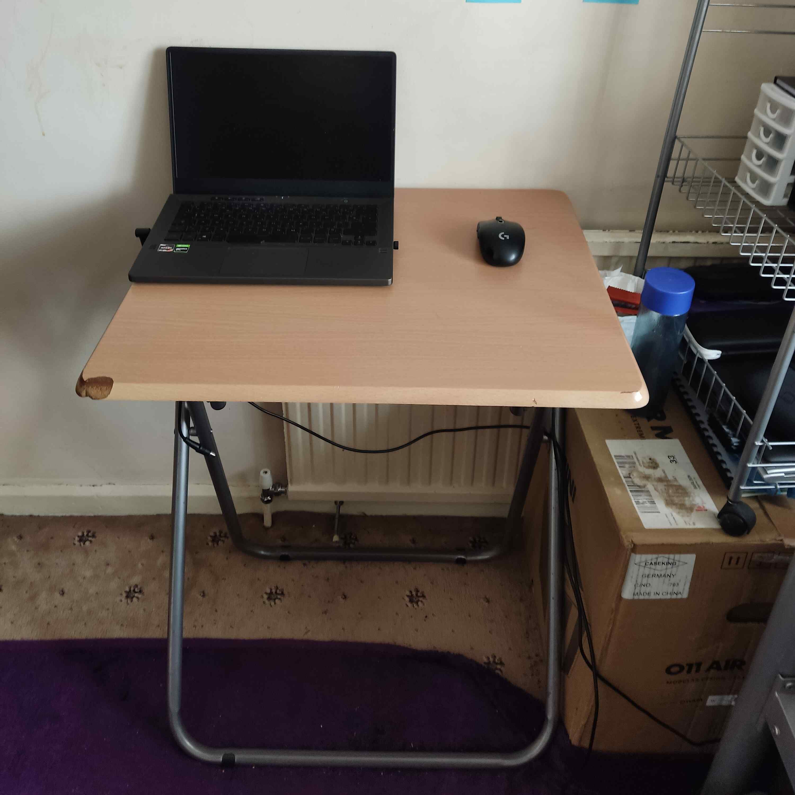
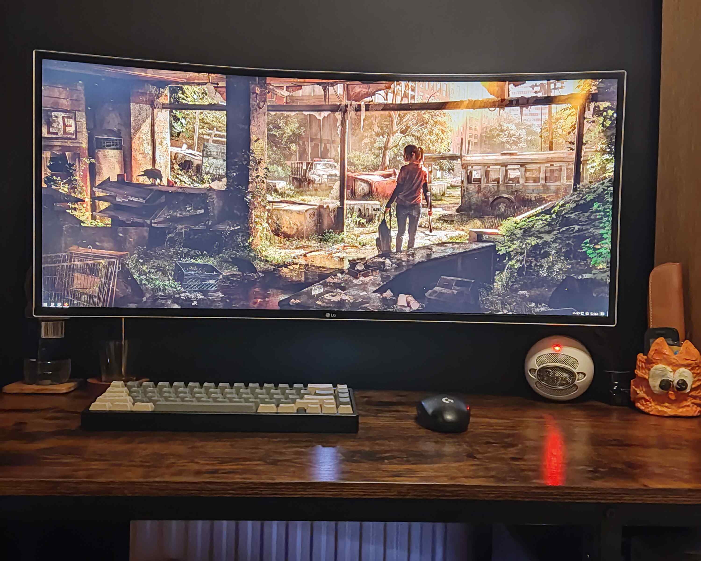

21:30
I used to have a side-hustle building computers for friends and family. I had built a few before even considering to build my own. Around 2020, I finally commit and built a PC I could call my own. It wasn't the fastest, even for it's time period. Since then, the majority of the parts have been upgraded since to slightly more capable components. Growing up with cheap netbooks meant I played many older titles such as morrowind, half life and many more. Ironically when I had built a more capable machine, I spent more time playing my collection of nostalgic old games at higher settings and mods than playing newer modern titles. Nontheless, Here is the list of current components:
CPU - i7-8700k (Overclocked to 5.2Ghz)
GPU - GTX 1660 6GB GDDR5
RAM - 32GB DDR4 3200Mhz
Motherboard - ROG STRIX Z390-H Gaming
Case - Lian Li 011 Air Mini (White)
Storage - 256GB M.2 NVME SSD, 1TB 7200RPM HDD
But what is a computer without a desk to sit at and peripherals to input with? I've had a myriad of different types of computers over my lifetime, from the reliable Toshiba Portege R600 to the curiously weird Lenovo IdeaCentre AIO 700. My desk setup however, changing as much as it had, never saw any substancial upgrades for many years. That is until recently.
Alongside my desktop PC, I had an ROG Zephyrus G14 that I use for university work. My desktop PC resided in another part of the house since at this point, I didn't believe that a desk of a usable size would fit. However, with some dedication and time with a tape measure, some new plans had been made. This is what the bedroom setup looked pre-upgrades:
With some needed upgrades, this little corner of my bedroom has been transformed into the ultimate piece of my personal man cave. I decided to go for a black and wood theme. The upgrades of which being:
- A fresh coat of paint. A cool grey with a black accent wall
- Black desk with wood worktop
- Invision Single Monitor Arm
- LG 34" 1440p Curved Ultrawide 75Hz (Overclocked to 85Hz) monitor
- Blue Snowball Microphone
- Custom Keyboard (Lucky65 Kit, Coconut Latte Switches, Womier Caps)
- Logitech G305 (Same Mouse From Previous Setup)
With all these upgrades, the bedroom setup now looks like this:
The child in me is in absolute awe to the beauty of the setup. Though, ironically I still play the same old morrowind, just in glorious ultrawide. With this now complete, my man cave has reached it's peak and with this, I leave the usual ending quote
“It never ceases to amaze me: we all love ourselves more than other people, but care more about their opinion than our own.” – Marcus Aurelius